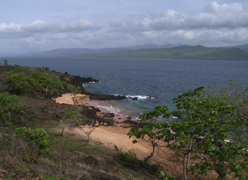

Indonesia Trav-E-Logs ©
Adonara
| back: Solor | View of western tip of Lembata island from hotel room. |
================================= Adonara is the second largest island in the Solor group, and the closest to Larantuka. This is a most geologically active region of the "Ring of Fire", with stunning views of smoking volcanoes on many of the islands. =================================
January, 2007
|
After putting my socks and shoes back on, started walking up and down the main street of Waiwerang looking for the Hotel Ile Boleng. It's not obvious, so folks sitting on a front porch are questioned. They explain how to get there, so make my third pass through town and take the first turn to the right. Another 600 meters and I ask again, finding the guesthouse does not have a sign out front. Well, kind of. The sign above the window reads Cafe Ratu, but inside the doorway is the old sign that reads Hotel Ile Boleng. Room availability may be a problem, as it is only 8:30 in the morning. The owner explains she closed the guesthouse many years ago and just ran the cafe, but locals often thought the word "cafe" is synonymous with "bar", so her business suffered. To rectify the situation, she advertised the meaning of the word "cafe". Just last month she decided to re-open the guesthouse, and I have the distinction of being her first Westerner. "Where did you hear about the hotel?" She is thrilled to read Hotel Ile Boleng " ...is the pick of the hotels" in the Lonely Planet. The room with beautiful view over the water is mine for less than $5 a night. With those formalities out of the way, asked about traditional houses and other activities in the area. She suggested two villages further east, and a red sand beach. Just take truck transport from the market down the street. After stocking up on pineapple and mango, took a truck and was let off some 45 minutes later. Here too, concrete ribbons are replacing the main dirt roadways. But that ends traditional building techniques, as mud-brick, block, and stucco steadily replace the structures built by word-of-mouth instructions passed-down for centuries. Fortunately a small batch of traditional homes were found in the upper reaches of Lamanele village. This village is located about six kilometers up the side of a mountain from the coast, so decide to follow a foot path down, and hopefully end up at a coastal road. The path leads through many garden plots of villagers, which continued all the way down to another road leading back up the mountain. After meandering around for awhile, some folks came by and pointed me towards another village. There, a bunch of kids were more than happy to lead me to Pantai Paser Mehra (Red Sand Beach). The beach is like a local secret, and NOT easy to find. Even several of the youngsters started going down wrong paths, but were called back by their peers. After half an hour, we finally end up at the beach, and it is gorgeous. Wished my snorkeling stuff was with me, as the water was clear, even though the waves somewhat rough. |
 Photos, from top right: Wading ashore from small boats; Traditional huts in Lamanele Village; More Traditional huts; Red sand beach at Eastern end of Adonara. Now it's time to continue the journey, but with less photography as my point-and-shoot camera has developed a problem, and the LCD screen on my back-up camera is too small to use without reading glasses. |
Bill
Email me at: "juno.com" preceded by an "@" and "dancer2SEAsia"
"The backpacker discovers people are beautiful everywhere. It's the Governments that are evil."------------------------------
next: Lewoleba
back: Solor